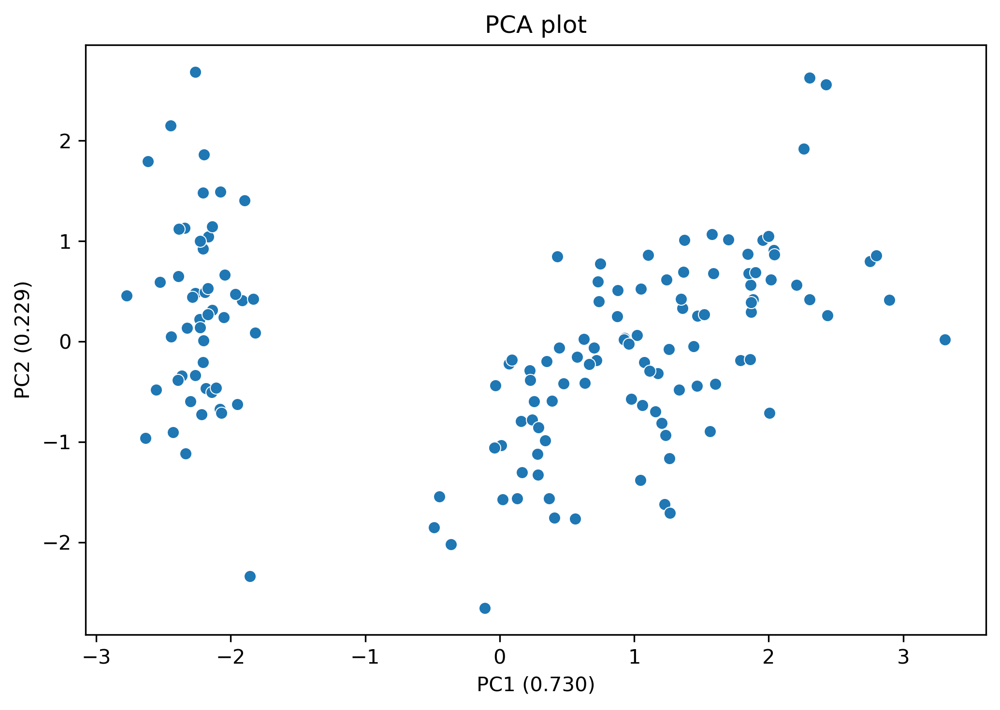
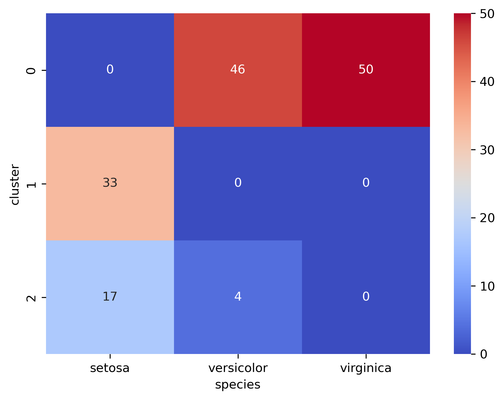
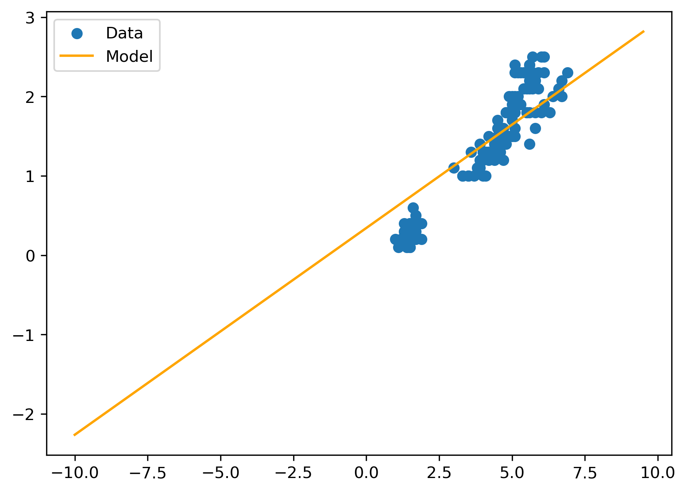
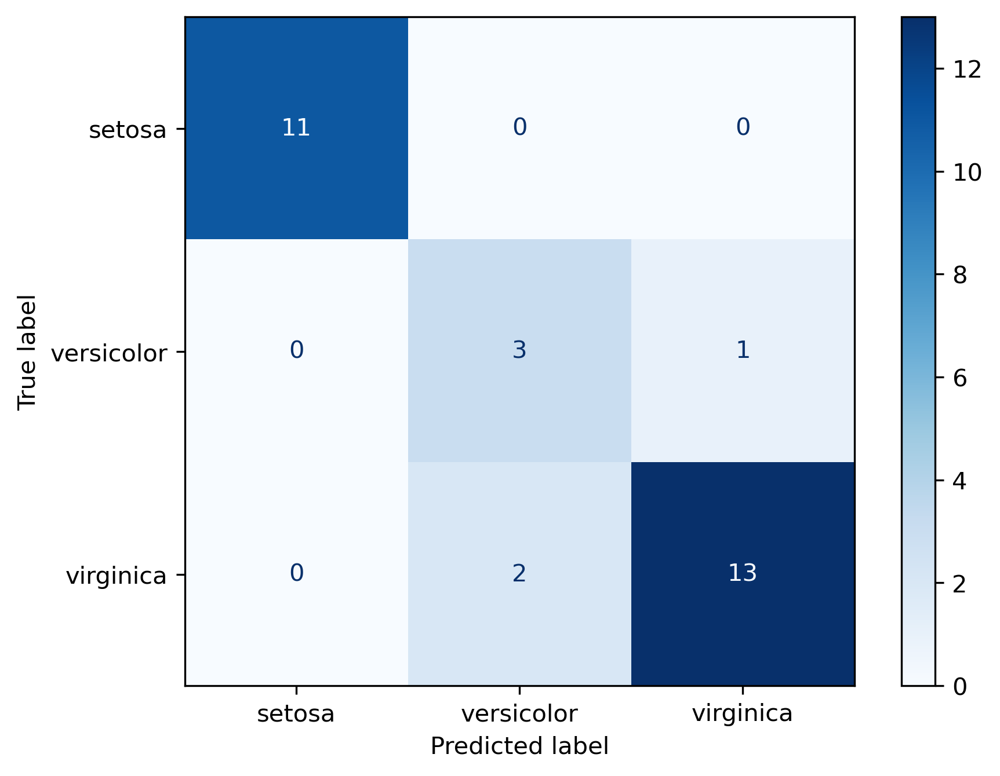

Code
import numpy as np
import matplotlib.pyplot as plt
import pandas as pd
import seaborn as sns
from sklearn import datasetsThomas Manke
April 27, 2026
| SL | SW | PL | PW | species | |
|---|---|---|---|---|---|
| 0 | -0.900681 | 1.019004 | -1.340227 | -1.315444 | setosa |
| 1 | -1.143017 | -0.131979 | -1.340227 | -1.315444 | setosa |
| 2 | -1.385353 | 0.328414 | -1.397064 | -1.315444 | setosa |
| 3 | -1.506521 | 0.098217 | -1.283389 | -1.315444 | setosa |
| 4 | -1.021849 | 1.249201 | -1.340227 | -1.315444 | setosa |
…. provides very convenient low-dimensional representation of the data
from sklearn.decomposition import PCA
pca = PCA(n_components=2)
Z_pca = pca.fit_transform(Z)
var_exp = pca.explained_variance_ratio_
xlab = f"PC1 ({var_exp[0]:.3f})"
ylab = f"PC2 ({var_exp[1]:.3f})"
sns.scatterplot(x=Z_pca[:,0], y=Z_pca[:,1])
#sns.scatterplot(x=Z_pca[:,0], y=Z_pca[:,1], hue=df["species"])
plt.title("PCA plot")
plt.xlabel(xlab)
plt.ylabel(ylab)
plt.tight_layout()
plt.show()
… represent data points by cluster ID

Use PyTorch to define a linear model (with one input and one output), a suitable loss function, and an optimizer.
Again we need some reformating (numpy \(\to\) pytorch tensor) to make the data fit with the pytorch framework.
We also need to define the input data (x_t) and output data (y_t). Their shape and dimensionality should correspond to the model defined above.
shape(x_t): torch.Size([150, 1])
shape(y_t): torch.Size([150, 1])Chose a number of iterations (e.g 100 “epochs”) and keep track of the loss at each iteration.
losses = []
model.train()
for epoch in range(200):
y_pred = model(x_t)
loss = loss_func(y_pred, y_t)
optimizer.zero_grad()
loss.backward()
optimizer.step()
losses.append(loss.item()) # keep track of losses
# finished training. inspect model
print('Mean Squared Error (loss): ',loss.item())
print('Parameters:')
for name, p in model.named_parameters():
print(name, p.detach())Mean Squared Error (loss): 0.131602942943573
Parameters:
weight tensor([[0.2605]])
bias tensor([0.3423])Plot the losses against the number of iterations an check if they are reducing
Use the trained model to make predction for 50 new \(x\)-values in a range \((-10,10)\). Overlay the model predictions with the original data on which the model was learned.
# pick any range of new x-values (meaningful?)
x_new = np.arange(-10,10,0.5)
# convert to tensor
x_new_t = torch.as_tensor(x_new, dtype=torch.float32).view(-1, 1)
# run predictions
yp = model(x_new_t)
# convert from tensor to numpy and reshape
y_pred = yp.detach().numpy().flatten()
plt.scatter(x_t, y_t, label="Data")
plt.plot(x_new,y_pred, c="orange", label="Model")
plt.legend()
plt.show()
… with test-train split
import numpy as np
import torch
import torch.nn as nn
from sklearn.metrics import accuracy_score, confusion_matrix, ConfusionMatrixDisplay
X = torch.tensor(iris.data, dtype=torch.float32) # numeric measurements
Y = torch.tensor(iris.target, dtype=torch.long) # class labels
print(f"X.shape = {X.shape}, Y.shape = {Y.shape}")
# define train and test data sets
n_samples = X.shape[0] # number of all samples
n_train = int(0.8 * n_samples) # number of training samples
perm = torch.randperm(n_samples) # shuffled random indicies
i_train = perm[:n_train] # train indices
i_test = perm[n_train:] # test indices
model = nn.Linear(4, 3) # n_in = 4, n_out = 3
loss_func = nn.CrossEntropyLoss()
optimizer = torch.optim.SGD(model.parameters())
model.train()
for epoch in range(5000):
yp = model(X[i_train])
loss = loss_func(yp, Y[i_train])
optimizer.zero_grad()
loss.backward()
optimizer.step()
model.eval()
z = model(X[i_test])
y_pred_class = torch.argmax(z, dim=1)
y_true_class = Y[i_test].numpy()
acc = accuracy_score(y_true_class, y_pred_class)
print('Accuracy: ', acc)
cm = confusion_matrix(y_true_class, y_pred_class)
disp = ConfusionMatrixDisplay(confusion_matrix=cm,
display_labels=iris.target_names)
disp.plot(cmap='Blues')X.shape = torch.Size([150, 4]), Y.shape = torch.Size([150])
Accuracy: 0.9
---
title: Unsupervised and Supervised Analysis
jupyter: pytorch
description: A template for Iris Data
eval: true
echo: true
draft: false
---
## Import Packages
```{python}
#| label: import
import numpy as np
import matplotlib.pyplot as plt
import pandas as pd
import seaborn as sns
from sklearn import datasets
```
## Obtain Iris data set
```{python}
#| label: iris_get_data
#| echo: true
iris = datasets.load_iris()
X = iris.data # measurements
y = iris.target # species label
print(f"shape(X) = {X.shape}")
print(f"shape(y) = {y.shape}")
```
## Normalization
```{python}
#| label: scaling
from sklearn.preprocessing import StandardScaler
# scale transformation
scaler = StandardScaler()
Z = scaler.fit_transform(X)
# create data frame
col_names = ["SL", "SW", "PL", "PW"]
df = pd.DataFrame(Z, columns=col_names)
df["species"] = pd.Categorical.from_codes(y, iris.target_names)
df.head()
```
## Unsupervised Analysis: Principle Component Analysis
.... provides very convenient low-dimensional representation of the data
```{python}
#| label: PCA
from sklearn.decomposition import PCA
pca = PCA(n_components=2)
Z_pca = pca.fit_transform(Z)
var_exp = pca.explained_variance_ratio_
xlab = f"PC1 ({var_exp[0]:.3f})"
ylab = f"PC2 ({var_exp[1]:.3f})"
sns.scatterplot(x=Z_pca[:,0], y=Z_pca[:,1])
#sns.scatterplot(x=Z_pca[:,0], y=Z_pca[:,1], hue=df["species"])
plt.title("PCA plot")
plt.xlabel(xlab)
plt.ylabel(ylab)
plt.tight_layout()
plt.show()
```
## Unsupervised: Clustering (kmeans)
... represent data points by cluster ID
```{python}
#| label: kmeans_clustering
from sklearn.cluster import KMeans
kmeans = KMeans(n_clusters=3)
# unsupervised model does _not_ see y - only normalized Z
df["cluster"] = kmeans.fit_predict(Z)
ct = pd.crosstab(df["cluster"], df["species"])
plt.figure()
sns.heatmap(ct, annot=True, fmt="d", cmap="coolwarm")
plt.show()
```
## Supervised: Linear Model $x \to y$
Use PyTorch to define a linear model (with one input and one output),
a suitable loss function, and an optimizer.
```{python}
#| label: iris_model
import numpy as np
import torch
import torch.nn as nn
print('torch version:', torch.__version__)
# identical to the 1st lecture (same model)
model = nn.Linear(1, 1) # n_in = 1, n_out = 1
loss_func = nn.MSELoss()
optimizer = torch.optim.SGD(model.parameters())
```
## Define Data
Again we need some reformating (numpy $\to$ pytorch tensor) to make the
data fit with the pytorch framework.
We also need to define the input data (`x_t`) and output data (`y_t`). Their shape and dimensionality should correspond to the model defined above.
```{python}
#| label: numpy2torch
# select two arbitrary variables as x=X[:,2] and y=X[:,3]
# just for illustration - feel free to change
x_t = torch.as_tensor(X[:,2], dtype=torch.float32).view(-1, 1)
y_t = torch.as_tensor(X[:,3], dtype=torch.float32).view(-1, 1)
print(f"shape(x_t): {x_t.shape}")
print(f"shape(y_t): {y_t.shape}")
```
## Train the Model
Chose a number of iterations (e.g 100 "epochs") and keep track of the loss
at each iteration.
```{python}
#| label: iris_training
losses = []
model.train()
for epoch in range(200):
y_pred = model(x_t)
loss = loss_func(y_pred, y_t)
optimizer.zero_grad()
loss.backward()
optimizer.step()
losses.append(loss.item()) # keep track of losses
# finished training. inspect model
print('Mean Squared Error (loss): ',loss.item())
print('Parameters:')
for name, p in model.named_parameters():
print(name, p.detach())
```
::: {.callout-note}
- "weight" = slope parameter
- "bias" = intercept
:::
## Inspect losses
Plot the losses against the number of iterations an check
if they are reducing
```{python}
#| label: iris_losses
plt.figure()
plt.plot(losses)
plt.ylabel('loss')
plt.xlabel('epoch')
plt.show()
```
## Predicitons
Use the trained model to make predction for 50 new $x$-values in a range $(-10,10)$.
Overlay the model predictions with the original data on which the model was learned.
```{python}
#| label: iris_predict
#| classes: preview-image
# pick any range of new x-values (meaningful?)
x_new = np.arange(-10,10,0.5)
# convert to tensor
x_new_t = torch.as_tensor(x_new, dtype=torch.float32).view(-1, 1)
# run predictions
yp = model(x_new_t)
# convert from tensor to numpy and reshape
y_pred = yp.detach().numpy().flatten()
plt.scatter(x_t, y_t, label="Data")
plt.plot(x_new,y_pred, c="orange", label="Model")
plt.legend()
plt.show()
```
::: callout-warning
### Model Critique
- there is no perfect fit because
- learning has not yet converged
- real data is noisy MSE $\ne 0$
- Models are ignorant: What is the Petal.Width for Petal.Length = -1cm ?
- Assessments of predicted performance should invoke some left out data (test set)
- Models are not necessarily causal
- all models are wrong, some are useful
:::
## Multivariate Multinomial Regression
... with test-train split
```{python}
#| label: multivariate_multinomial
import numpy as np
import torch
import torch.nn as nn
from sklearn.metrics import accuracy_score, confusion_matrix, ConfusionMatrixDisplay
X = torch.tensor(iris.data, dtype=torch.float32) # numeric measurements
Y = torch.tensor(iris.target, dtype=torch.long) # class labels
print(f"X.shape = {X.shape}, Y.shape = {Y.shape}")
# define train and test data sets
n_samples = X.shape[0] # number of all samples
n_train = int(0.8 * n_samples) # number of training samples
perm = torch.randperm(n_samples) # shuffled random indicies
i_train = perm[:n_train] # train indices
i_test = perm[n_train:] # test indices
model = nn.Linear(4, 3) # n_in = 4, n_out = 3
loss_func = nn.CrossEntropyLoss()
optimizer = torch.optim.SGD(model.parameters())
model.train()
for epoch in range(5000):
yp = model(X[i_train])
loss = loss_func(yp, Y[i_train])
optimizer.zero_grad()
loss.backward()
optimizer.step()
model.eval()
z = model(X[i_test])
y_pred_class = torch.argmax(z, dim=1)
y_true_class = Y[i_test].numpy()
acc = accuracy_score(y_true_class, y_pred_class)
print('Accuracy: ', acc)
cm = confusion_matrix(y_true_class, y_pred_class)
disp = ConfusionMatrixDisplay(confusion_matrix=cm,
display_labels=iris.target_names)
disp.plot(cmap='Blues')
```